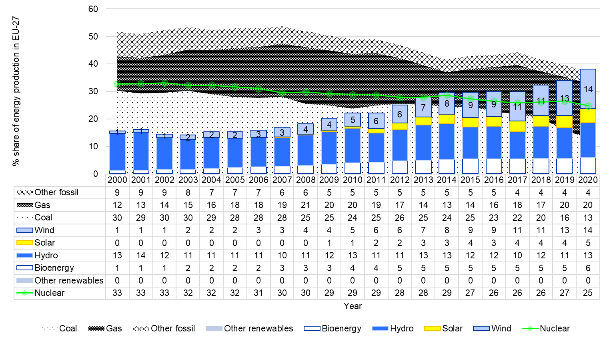
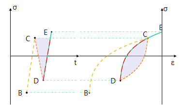
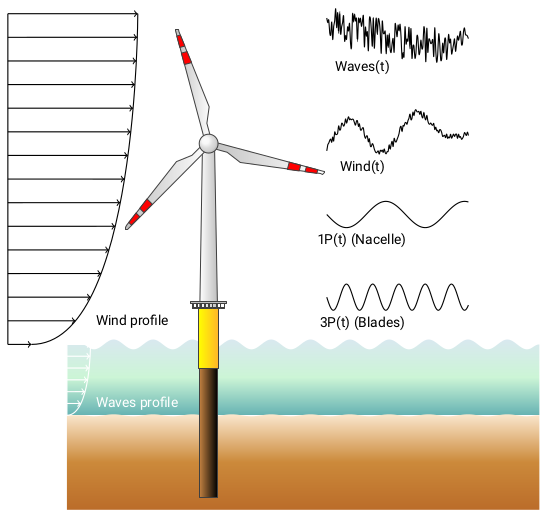

Fatigue is the deterioration of a material over time.
The first modern multi-megawatt wind turbines were developed and
installed in the 1970s in the United States, under the impulse of the
National Aviation and Space Administration (NASA). From 1974 through the
mid-1980s, thirteen experimental wind turbines of four different designs
started their operations. This research and development program
pioneered many of the multi-megawatt turbine technologies in use today,
including steel tube towers, being the protagonists of this work.
Initially, designers developed them using static and quasi-static
analysis. In the best scenarios, such simple designs led to
over-designed tur-bines, while in the worst, they led to premature
failures. Engineers soon realized that wind turbines are fatigue-critical
machines experiencing unique load spectra in their lifetime. Concerning
offshore wind sup-port structures, corrosion is another critical failure
mode besides fatigue. The low accessibility and high inspection/repair
costs of large assemblies in corrosive environments motivate remote
monitoring and optimized inspection and maintenance plans based on
continuous assessment of the structure’s reliability. Remote monitoring
has given access to a vast quantity of data that today are being used to
update the fa-tigue life of existing structures.
Due to the time-variant uncertainties associated with fatigue loads,
corrosion, stress prediction, and model-ling of the deterioration
mechanisms, a more advanced lifecycle reliability assessment is
necessary to assess structural safety and support decision making.
This could eventually reduce operation and maintenance costs, and help
further boosting of an energy source that is inevitably becoming a main
player in the mar-ket, growing from 1 to 14% of share (onshore +
offshore) from 2000 to 2020 in EU-27 countries, as we show here below.

Figure 1. Percentage share of energy production in EU-27 countries
from 2000 to 2020. Years 2019 and 2020 have been extrapolated by
EMBER. Data from 2021. 2000 to 2018 are available from EUROSTAT.#
Fatigue analysis studies how damage accumulates in an object subjected to
cyclic stress variations.
Hysteresis and memory dependence, or fatigue, are basic characteristics
of many complex systems. A pre-requisite for hysteresis is that the
systems have sufficiently many metastable states so that, if they are
sub-jected to cyclic loading, there are at least two distinct sequences
of states that connect the initial and final configurations to some
intermediate point of the cycle. Memory dependence is qualitatively more
compli-cated. In hysteresis systems the existence of a memory is
essentially equivalent to the existence of a count-ing mechanism that is
capable of recording the cumulation of successive cycles. These can be
estimated by cycle-counting the time series through algorithms such as
rainflow (cfr. Figure 2) or rainfill (also known as
four-point ASTM). Cycles are usually represented as sinusoids, and their
extremes are defined as peaks (maximum stress, σ:sub:max) and
valleys (minimum stress, σ:sub:min), as shown in Figure 3.
Tensile stresses are taken to be positive and compressive stresses are
taken to be negative.

Figure 2. Stress-strain hysteresis loops for a time series#
The SIF range is the difference between the maximum and the minimum
Stress Intencity Factor in the fatigue cycle, and it is indicated
as \(\Delta K\). The stress intensity factor is a measure of the
stress concentration at a crack tip. It is a dimensionless quantity
that is used to predict the crack growth rate in a material.
\[\Delta K = Y(a) \cdot \Delta \sigma \sqrt{\pi \, a}\]
where:
- \(a\) is the crack length
- \(Y(a)\) is the gemoetric factor
- \(\Delta \sigma\) is the stress range
The crack growth rate is the rate at which a crack grows in a material
under a given set of conditions. It is a measure of the rate of
propagation of a crack in a material. It is usually expressed in
millimeters per fatigue cycles (mm/cycle).
The crack growth rate is usually calculated using the Paris’ law:
Concerning offshore wind turbines, fatigue cycles come from multiple
sources and affect the structure both at high and low frequencies.
Usually loads deriving from thrust and wind generate low-frequency
(slowly-varying) fatigue cycles, while waves form high-frequency
(fast-varying) fatigue cycles, as schematical-ly illustrated in Figure 4.

Figure 4. Schematics of the loads acting on an offshore wind turbine#
Rainflow counting estimates the number of load change cycles as a
function of cycle amplitude.
Initially, rainflow turns the load history into a sequence of time (t)
ordered reversals. Reversals are the local minima and maxima where the
load first derivative changes sign. The function counts cycles by
considering a moving reference point of the sequence, Z, and a moving
ordered three-point subset - t(subset) ≥ t(Z) - with these
characteristics:
The first and second points are collectively called Y.
The second and third points are collectively called X.
In both X and Y, the points are sorted from earlier to later in
time, but are not necessarily consecutive in the reversal sequence.
The range of X, denoted by r(X), is the absolute value of the difference
between the amplitude of the first point and the amplitude of the second
point. The definition of r(Y) is analogous.
The rainflow algorithm is as follows (Figure 5. Rainflow algorithm flowchart).
At the end, the function collects the different cycles and half-cycles
and tabulates their ranges, their means, and the points at which they
start and end. This information can then be used to produce a histogram
of cycles.
Example
The following example shows how to use the rainflow algorithm to
cycle-count the signal given in the image here below.
The damage equivalent stress range or (DES) is a simple way to
linearize a damage value. It is a common approach to represent
linear damage results. The basic idea is that \(N_{eq}\) cycles
with a stress range of DES induce as much damage as are present in
the signal.
Residual cycles or half-cycles are cycles that are not closed in the
processed timeseries. They are sometimesreferred to as half-cycles
and counted as 0.5 cycles in a cycle counting.
An alternative way of dealing with residual cycles is to store them
seperately and process them in a second run.
A timestamp is a time information that is associated with a particular
segmented data series. Usually it is represented as a
datetime.datetime
instance.
Performing a lifetime assessment for years’ worth of SHM data is a
computational time-demanding operation. The data we use are acquired at a
sampling frequencies that can be tens of Hertz or even more. This means that
if we perform the lifetime assessment by reversals identification and
cycle-counting the concatenated signal of the period of interest, it takes
too much calculation effort and time and lacks flexibility.
This bottleneck can be easily eliminated by cycle-counting and storing the
histogram of every segmented subset of data.
Notwithstanding, cycle-counting generates a new issue: whenever cycle-counting
a segmented subset, a series of so-called residual cycles will be left.
Residual cycles are also called half-cycles because they are conventionally
artificially added to the final histogram as 0.5 cycles times their
corresponding stress ranges, meaning that we are de-facto adulterating the
actual fatigue histogram by adding spurious information to it. Mathematically
speaking, residuals are cycles that did not have the time to complete yet,
because some physical events, happening at very low frequencies, cannot be
captured within the data segment. Therefore, an ideally infinite
time series would have zero residuals. The first and most obvious solution to
this error is to concatenate the segmented time series in the time window of
interest, then perform cycle-count and the fatigue analysis using the resulting
histogram. This option is undoubtedly time/memory demanding as, besides the
final cycle-counting, it requires a high amount of data processing for each
subset. Secondly, this approach is certainly not flexible as the sequence of
operations just described shall be repeated for each analysis performed. Last,
we also have to deal with gaps in the data. Even if the ambition were to
concatenate everything, we would still make errors as such.
Marsh *et al.*
have introduced a brilliant approach that significantly
reduces calculation time without losing accuracy in the final spectrum
histogram, as it can retrieve all the hysteresis cycles caused by LFFD without
needing the a-priori signal concatenation. We have modified the approach to
give us the necessary flexibility to deal with different sized time windows at
every runtime, and re-cycle-counting will not be needed. The approach follows:
Import the segmented-long signal.
Process the signal into fore-aft and side-side bending moments.
Cycle-count the resulting bending moments which yields to a histogram of the full cycles and its residuals as half-cycles.
Extend the resulting histogram, to include the sequence of time ordered reversals of the residuals as well
Store the extended histogram as a file.
By storing the extended histograms (blue part in Figure 6), we save storage
space and calculation time compared to concatenating strain-time signals.
Moreover, we can also perform assessments based on the segmented subsets and
the long-term data. The residuals are stored twice at this stage as half cycles
in the “extended” histogram and as a sequence. In the second part of the
algorithm, we recover the LFFD (yellow part in Figure 6) over an extended
period (e.g. years). For each stored extended histogram:
Remove the half cycles from the histogram to obtain a “full cycles” histogram and merge all histograms of the considered period.
Concatenate the residuals sequence.
Cycle-count the concatenated residuals sequence.
Merge the merged full cycles histogram and the residuals histogram (residuals of the residuals).